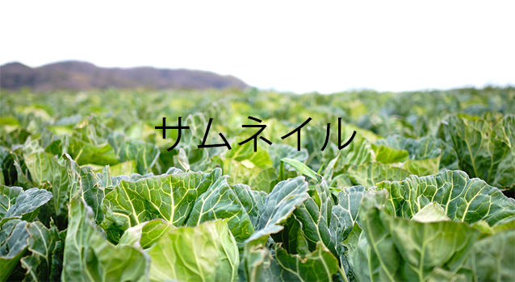

- ここにSNSボタン
- ここにSNSボタン
NEW!＜雪中キャベツ＞甘みじんわり、雪の下で越年…長野・小谷
2015年 02月 09日

昨年１１月に最大震度６弱の地震を観測した長野県小谷（おたり）村で、深さ約１．５メートルの雪の中から掘り出される「雪中キャベツ」が収穫期を迎えている。
昨年７月に種をまいたキャベツは直径約３０センチに成長し、１２月から降り積もる雪の下に置いたまま年を越した。約０度に保たれた雪の中でキャベツは、凍りつかないようにでんぷん質を糖質に変化させるため、食べると口にじんわりと甘みが広がる。今年もしっかりと雪が積もり、甘さは安定しているという
昨年１１月に最大震度６弱の地震を観測した長野県小谷（おたり）村で、深さ約１．５メートルの雪の中から掘り出される「雪中キャベツ」が収穫期を迎えている。
昨年７月に種をまいたキャベツは直径約３０センチに成長し、１２月から降り積もる雪の下に置いたまま年を越した。約０度に保たれた雪の中でキャベツは、凍りつかないようにでんぷん質を糖質に変化させるため、食べると口にじんわりと甘みが広がる。今年もしっかりと雪が積もり、甘さは安定しているという
- 登録タグ・関連求人
■関連記事を見る
タイトル保育士はこんな悩みを抱えている保育士はこんな悩みを抱えている・・・
読むタイトル保育士はこんな悩みを抱えている保育士はこんな悩みを抱えている・・・
読むタイトル保育士はこんな悩みを抱えている保育士はこんな悩みを抱えている・・・
読むタイトル保育士はこんな悩みを抱えている保育士はこんな悩みを抱えている・・・
読む